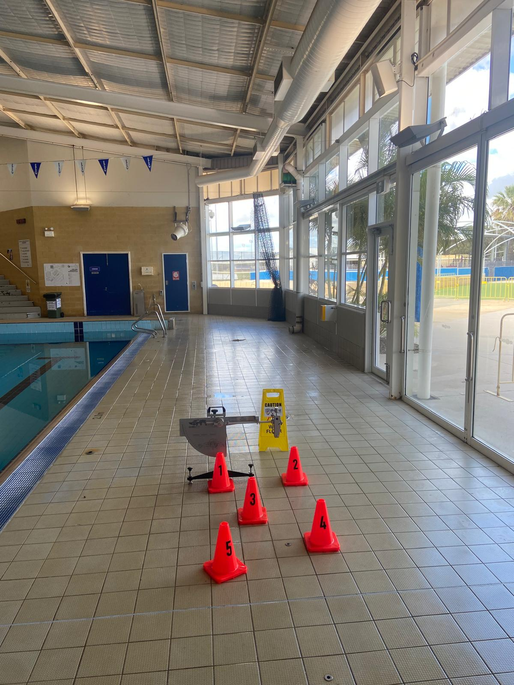

Slip Resistance Testing
Wet pendulum, dry floor friction and combined testing.
Explore slip testing →Acknowledgement of CountryPrime Safety & Compliance Services Pty Ltd acknowledges the Traditional Custodians of the lands on which we live and work. We pay our respects to Aboriginal and Torres Strait Islander Elders past, present and emerging, and recognise their continuing connection to land, waters and community.
Real photographs supplied by Prime Safety showing field setup, test areas and working environments. No stock placeholders.

Examples include commercial bathrooms, retail entries, public concourses and aquatic environments. Captions describe the visible testing context without inventing client names or locations.
Prime Safety works across Perth metro, regional WA and interstate by arrangement.